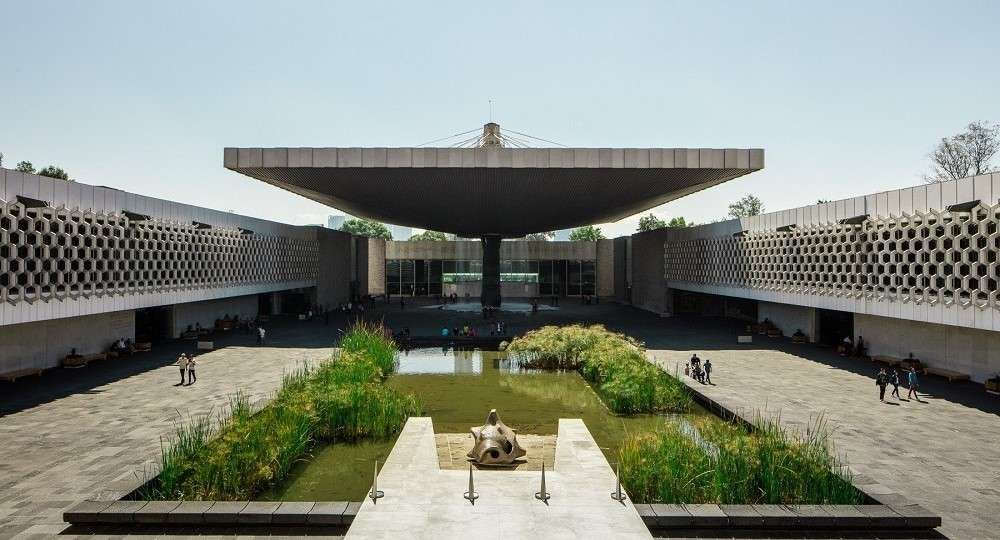

Galería

Museo Nacional de Antropología

Museo del Prado

Los museos son espacios donde se conserva una parte importante de la historia y la cultura de la humanidad. En ellos se exhiben obras de arte, esculturas, fósiles y objetos históricos que ayudan a comprender el pasado.
Los museos preservan el patrimonio cultural, apoyan la educación, fomentan el turismo y permiten conocer la historia de diferentes civilizaciones.
